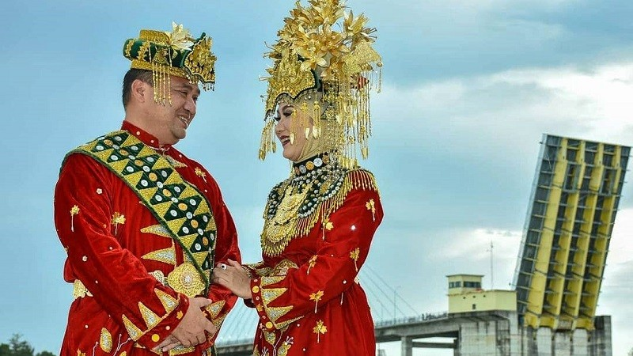
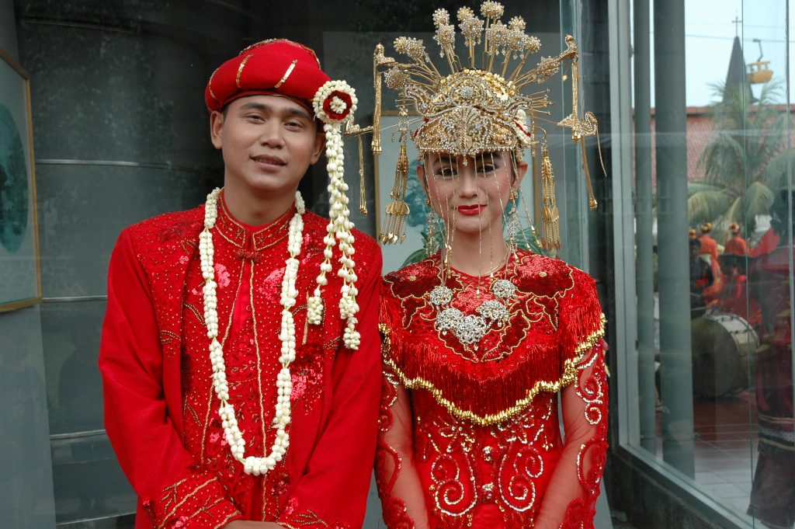

Pakaian adat bukan sekadar identitas suatu daerah, tetapi juga cerminan sejarah dan budaya masyarakatnya. Di Indonesia, keberagaman budaya tercermin dalam kekayaan pakaian adat yang memiliki ciri khas masing-masing. Menariknya, beberapa pakaian adat di Indonesia menunjukkan adanya akulturasi budaya, percampuran antara unsur budaya asli dengan unsur budaya asing.
1. Pakaian adat Bangka Belitung

Salah satu contoh menarik adalah pakaian adat Bangka Belitung. Dikutip
dari laman Wonderful Pangkalpinang, pakaian adat daerah ini merupakan
hasil akulturasi budaya Melayu, Arab, dan Tionghoa. Menurut sejarah,
interaksi antara pedagang Arab dan masyarakat Tionghoa pada masa lalu
melahirkan perpaduan corak yang indah pada pakaian adat. Masyarakat
yang terpesona dengan keindahan perpaduan tersebut kemudian mulai
mengenakan pakaian serupa, yang kemudian dipadukan dengan corak asli
Bangka Belitung.
Busana adat Bangka Belitung dikenal dengan sebutan baju seting atau
kain cual. Baju seting adalah baju kurung khusus wanita yang
didominasi warna merah serta terbuat dari sutra atau beludru. Baju ini
dipadukan dengan kain cual, yaitu jenis kain asli Bangka yang dibuat
dengan cara tenun ikat yang masih tradisional. Untuk aksesoris, ada
beberapa yang dikenakan, mulai dari tutup dada berbentuk teratai,
tutup kepala berupa bunga hong, hingga sejumlah perhiasan.Untuk pria,
pakaian adatnya berupa jubah Arab berwarna merah yang dipadukan dengan
selendang di bahu kanan. Aksesoris maupun pernak-pernik yang dipakai
juga hampir sama dengan pakaian adat untuk perempuan.
Kemiripan dengan budaya lain dapat dilihat dari warna merah yang
sangat khas dengan warna pakaian pengantin orang Tiongkok. Aksesoris
yang berbentuk bunga hong juga diadaptasi dari budaya Tiongkok yang
melambangkan kebahagiaan.
2. Pakaian Pengantin Wanita Betawi

Contoh lain akulturasi budaya dalam pakaian adat adalah baju pengantin
wanita Betawi. Penelitian yang dilakukan oleh Sabella Astrini dan
kawan-kawan mengungkapkan bahwa baju pengantin wanita Betawi mirip
dengan baju pengantin wanita Cina Selatan yang disebut dengan qun gua.
Baju pengantin Betawi terdiri dari dua bagian, yaitu bagian atas yang
disebut Tuaki dan bagian bawah yang disebut dengan Kun. Tuaki adalah
blus berlengan panjang dengan kerah shanghai serta terbuat dari kain
satin atau beludru warna merah. Tuaki dihiasi dengan motif-motif khas
pakaian Kekaisaran China, seperti motif naga, burung hong/phoenix, dan
juga bunga peony.
Sementara bagian bawah (Kun) adalah rok lebar yang panjangnya sampai
mata kaki. Sama seperti Tuaki, Kun juga dibuat dari kain satin atau
beludru berwarna merah cerah. Kun dihiasi dengan manik-manik yang
membentuk motif naga, burung hong, dan bunga peony. Secara
keseluruhan, Tuaki dan Kun melambangkan suka cita dan kebahagiaan dari
kedua pengantin beserta keluarganya.